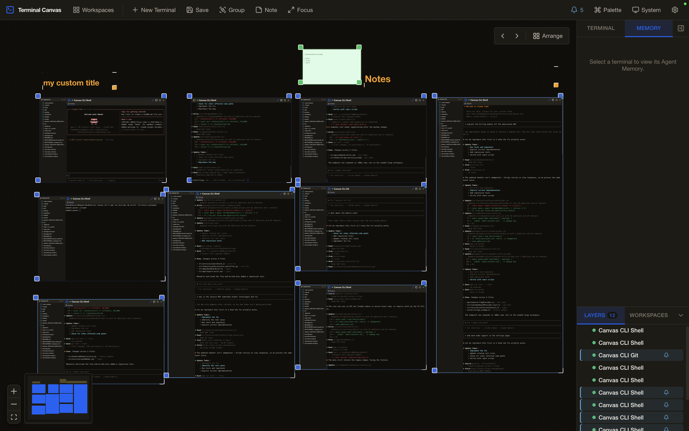
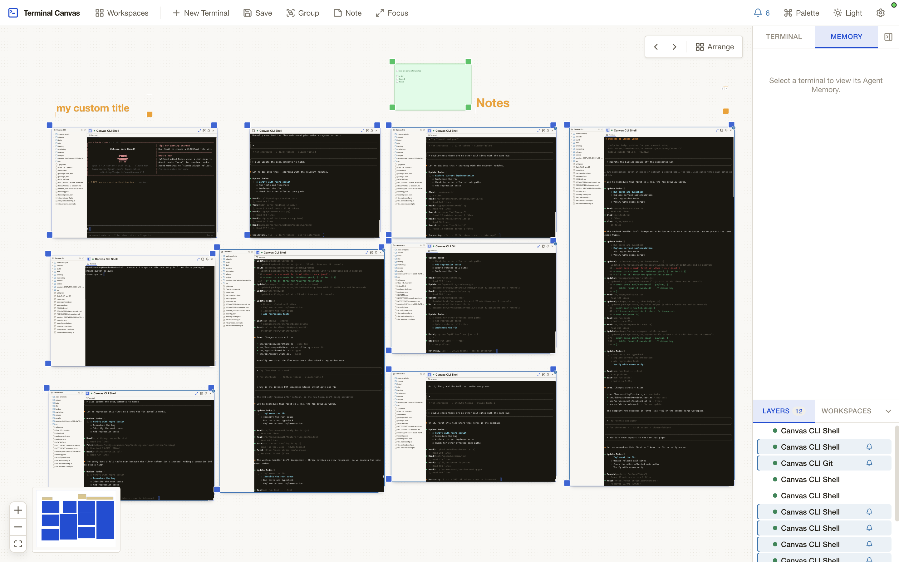
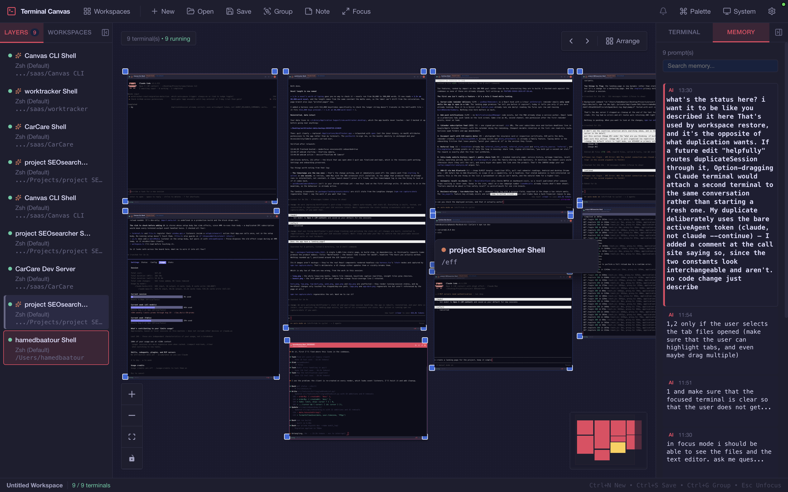
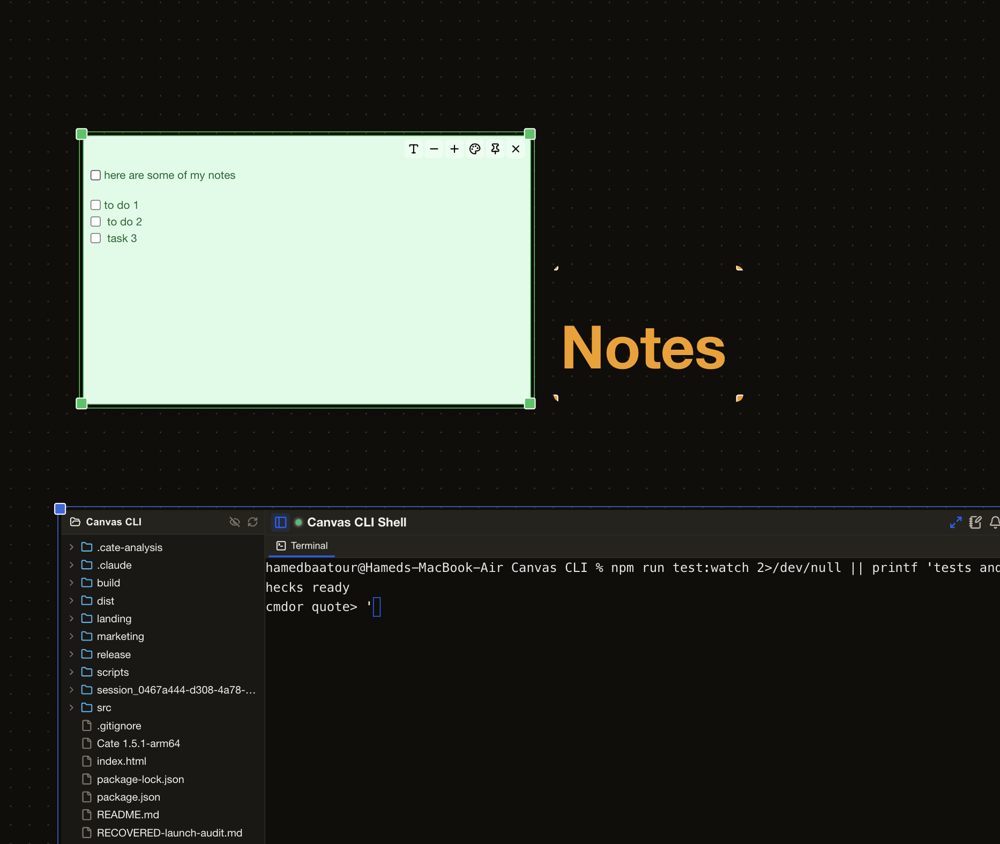

One place for every coding terminal · macOS
Multiple terminals
get hard to manage.
Once you have an agent on the refactor, another on tests, a dev server and a watcher, normal terminal tabs stop being enough. Terminal Canvas puts every terminal in one visual workspace, clearly labeled, with notes, files and the full history of prompts you sent to each agent.
Drag the canvas · drag a title bar
One agent is a tool.
Five agents is an operation.
A terminal tab shows you one thing at a time and tells you almost nothing about the rest. Once you're running more sessions than you have fingers, the tab strip stops being navigation and starts being a guessing game.
Worse: the thing you most need to remember — what you actually asked this agent to do — scrolls off the top of the buffer within a minute, buried under thousands of lines of tool output.
- Every tab is titled after a shell, not after the work.
- Your prompt is gone the moment the agent starts talking.
- Nothing tells you which session is waiting on you.
- Close the window and the whole arrangement is gone.
Real terminals, spatially
Pan across your whole operation.
Every window on the canvas is a real PTY — your actual shell, your actual
PATH, your actual .zshrc. Not a web shell pretending
to be one. Spawn as many as your machine can carry, then arrange them the way
you think about the work.
- Scroll to pan, Ctrl+scroll or pinch to zoom, space-drag for a fast pan.
- Drag and resize windows; a status dot tells you what's running, waiting, or idle.
- Frame related sessions into a group and move them as one.
- Typed connections keep linked nodes travelling together when you drag.
- Drop sticky notes anywhere you'd otherwise lose the thought.


The prompt rail
Never ask
“what did I tell it to do?”
Every line you submit is captured next to the terminal that received it — your input, not the flood of output that came back. Pin the ones that matter, search the rest, click to send one again.
Capture happens in the main process at the moment you press Enter, so it works with any tool: Claude Code, aider, codex, or a plain shell that has no idea it's being watched.
- Prompts are classified — shell command, agent prompt, or pasted block.
- Passwords and keys are redacted before anything is stored.
- History is saved with the workspace, so it survives a restart.

Sessions that name themselves
“Terminal 3” tells you nothing.
Sessions get named from what they're actually doing — the project, the command, the shape of your prompts. Point it at a free Groq key for AI naming, or leave it off entirely and use the built-in rules, which never touch the network.
Rename anything by hand and it stays renamed. Secrets are redacted before a single byte goes anywhere.
Files where the work is
Read what the agent just changed, without leaving.
Open a file drawer on any terminal and you get that session's repo, rooted automatically. Open files in tabs with real syntax highlighting, or pull one out onto the canvas as its own node — visually linked back to the session it came from, and travelling with it when you drag.
- The drawer claims new canvas space, so the terminal never jumps.
- Files are watched — change one outside the app and you'll know.
- Filesystem access is guarded in the main process, scoped to the repo root.

Focus mode
When it's time to go deep, the canvas gets out of the way.
One keypress drops the whole workspace into a full-screen stage: the session you're working front and centre, everything else reduced to a strip you can glance at. Files come with you.
And when you're done, save the workspace — positions, sizes, names, groups, notes, prompt history — as a JSON file on your disk. Reopen tomorrow and it's exactly where you left it. Restore layout only, or bring the shells back up with it.
No account. No cloud. No telemetry.
Terminal Canvas is a desktop app that runs shells on your machine and writes JSON to your disk. That's the whole architecture.
Your workspaces are files
Plain JSON in your app-data folder. Back them up, diff them, put them in a repo. Nothing is held hostage.
Silent unless you ask
The only outbound call is AI naming, and only if you supply a key. Turn it off and the app never opens a socket.
The renderer can't touch your disk
Context isolation on, Node integration off. Every file and shell operation crosses a typed, guarded IPC bridge.
Secrets stripped first
API keys, tokens, passwords and .env lines are redacted before a prompt is stored or sent anywhere.
The details.
| Platforms | macOS 11+ (Apple Silicon & Intel) |
|---|---|
| Shells | zsh, bash, fish, sh — auto-detected and spawned as login + interactive so your real PATH is there |
| Works with | Any CLI tool: Claude Code, aider, codex, plain shells, dev servers, watchers |
| Terminal | xterm.js over native PTYs (node-pty), full ANSI colour, themed to match the app |
| Editor | CodeMirror 6 with syntax highlighting for 15 languages — TypeScript/JavaScript, Python, Rust, Go, Java, C/C++, PHP, SQL, HTML, CSS, Vue, JSON, YAML, XML, Markdown |
| Persistence | Local JSON workspaces. Terminal output is deliberately not persisted — only your prompt history. |
| AI naming | Optional. Groq (bring your own free key), default model llama-3.1-8b-instant. Rule-based fallback needs no key and no network. |
| Code signing | Not yet signed or notarized — one-time approval on first launch. See the FAQ. |
| Licence | Free / pay what you want during launch. |
Keyboard
- New terminal Ctrl/Cmd N
- Command palette Ctrl/Cmd ⇧ P
- Save workspace Ctrl/Cmd S
- Group selection Ctrl/Cmd G
- Zoom in / out Ctrl/Cmd + −
- Reset zoom Ctrl/Cmd 0
- Pan canvas Space + drag
- Leave terminal focus Esc
Canvas shortcuts stand down while a terminal has keyboard focus, so Ctrl+C and Ctrl+G reach your shell instead of the app.
Start free. Pay what feels fair.
The full launch build is available for $0 or more. Download it, use it with real work, and pay if it earns a place in your setup.
Launch access
$0+ pay what you want
- macOS builds for Apple Silicon and Intel
- Updates delivered through Gumroad
- Use it on your own machines, no seat counting
- Direct line to the developer for bugs
14-day refund · no questions asked
Straight answers.
Is it code-signed?
Not yet. It's an indie build and a signing certificate is on the roadmap, so your OS will warn you once on first launch.
macOS: open the app, let it be blocked, then System Settings → Privacy & Security → scroll down → Open Anyway. One time, then never again.
Do I need an API key?
No. AI session naming is the only feature that uses one, it's optional, and Groq's free tier covers it comfortably. Everything else — including rule-based naming — works with zero setup and zero network access.
Do my prompts leave my machine?
Only if you turn on AI naming, and only a redacted summary — API keys, tokens,
passwords, .env lines and private keys are stripped first. With naming
off, nothing leaves your machine at all. There is no telemetry and no account.
Is this a replacement for my terminal?
It can be, but it's aimed at a specific job: running several long-lived agent sessions at once and keeping track of them. Plenty of people keep their usual terminal for one-off commands and use Terminal Canvas for the sessions that run for hours.
Does it work with Claude Code / aider / codex?
Yes — with all of them, and with anything else that runs in a shell. These are real PTYs, so a tool can't tell the difference between Terminal Canvas and iTerm. Prompt capture happens at the keystroke level, so it doesn't need per-tool integration.
What about Linux?
Not an official target yet. The POSIX shell-detection path is shared with macOS so it will probably mostly work, but it isn't built, tested, or supported — don't buy it for Linux today.
Can I get a refund?
14 days, no questions asked. If it doesn't fit how you work, say so and you get your money back.
Give every agent
a place to stand.
One canvas, every session, and a record of everything you asked. macOS, available free during launch with pay-what-you-want pricing.